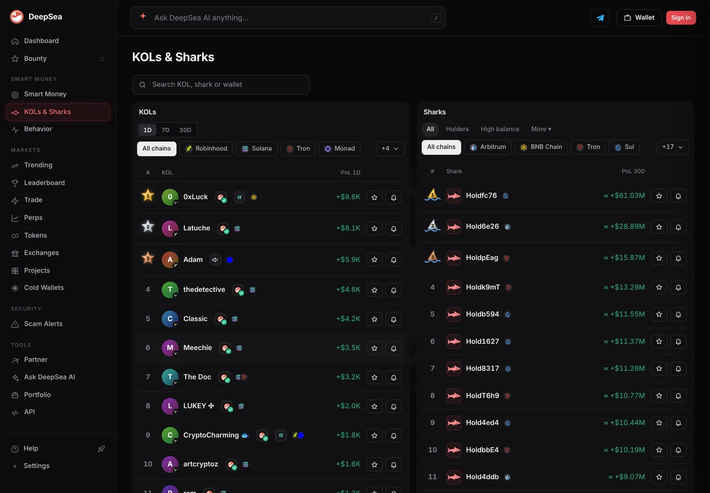

10 sharks sold $20 million of USDD in a day and bought back $14.6 million, but the peg held
Ten large wallets tracked by DeepSea ended $5.45 million net sellers of the Tron dollar token. Tronscan shows USDD being redeemed and burned the same morning, while the price stayed near $0.999.
Key points
- Ten shark wallets sold $20,046,440 of USDD on Tron and bought $14,593,708 in 51 trades, in DeepSea's 24-hour table built at 6:36 a.m. ET on November 26, 2026.
- That leaves the sharks about $5.45 million net sellers, the biggest net sale of any dollar stablecoin line in the table (the gold tokens PAXG and XAUt are not counted).
- USDD traded at $0.9987 on CoinGecko at 6:39 a.m. ET, inside a 24-hour range of $0.9958 to $0.9992.
 What DeepSea's data shows
What DeepSea's data shows
DeepSea's 24-hour flow table, built at 6:36 a.m. ET on November 26, has a USDD line on Tron: 10 shark wallets, $20,046,440 sold and $14,593,708 bought, in 51 trades. Sharks are wallets DeepSea tags for their large trading size. The token address in the table matches the USDD contract on Tronscan and the Tron address CoinGecko lists.
The table does not split the USDD total by wallet, and no USDD line appears in its most recent hour.

Data: DeepSea (desea.io), checked November 26, 2026, 6:36 a.m. ET.
What USDD is and what moved
USDD is a dollar stablecoin, a token meant to stay worth $1, that lives mainly on the Tron network. CoinGecko says the TRON DAO Reserve manages it. CoinGecko put its market value at about $1.48 billion at 6:39 a.m. ET, with $3.7 million traded in 24 hours.
The ten sharks traded $34.6 million of USDD in both directions, about nine times CoinGecko's daily volume figure. The two numbers measure different things. DeepSea counts on-chain swaps by tagged wallets, while CoinGecko counts mostly trading on exchanges and listed pools. Net, the sharks sold about $5.45 million.
What Tronscan shows the same morning
Tronscan, the Tron block explorer, counts 1,143,915,978 USDD on Tron, held by 467,809 addresses, with 2,056 transfers in 24 hours.
Its latest transfers, from 5:55 a.m. to 6:37 a.m. ET, show a steady pattern. USDD goes into a contract that Tronscan tags "USDD: USDT PSM" (a peg stability module, which swaps USDD and USDT) and is then sent to Tron's black hole address, which takes it out of supply. The largest was 990,000 USDD at 6:00 a.m. ET. New USDD was also created in the same window, for example 470,751 USDD sent out through a SunSwap router at 5:59 a.m. ET.
We cannot tie these transfers to the ten sharks, because the table does not list which wallets traded USDD. What Tronscan shows is that people were turning USDD into USDT and back at the module, which is how the token is built to hold $1.

The peg and the supply
The selling did not break the peg. CoinGecko's 24-hour low was $0.9958 and its high $0.9992. DefiLlama counts $1.498 billion of USDD across all networks on November 26, up from $1.425 billion a week earlier but down from $1.775 billion a month ago.
USDD shark trades on Tron in 24 hours, DeepSea
US$ million
Source: DeepSea 24-hour table, built November 26, 2026, 6:36 a.m. ET.
LC Insight analysis
This section is our reading of the facts above, not a statement of fact.
- We think the size of the two-way trading matters more than the net sale. Ten wallets moved $34.6 million for a net sale of $5.45 million, which looks like large holders cycling between dollar tokens rather than a run on USDD.
- A stablecoin's health shows in its price and in redemptions working smoothly. On November 26 both held: the price stayed above $0.995 and Tronscan shows the peg module taking USDD in and burning it.
- The supply picture is mixed. USDD grew about $72 million in a week on DefiLlama, but it is still about $277 million smaller than a month ago.
What's next
- Whether the USDD line in DeepSea's table stays net sold in the next run.
- USDD's price against its 24-hour low of $0.9958 on CoinGecko.
- The burn and mint flow at the PSM contract on Tronscan.
Disclaimer. This article is based on public information and the sources listed below as of the update time shown. It is for information only and is not investment, legal or tax advice. Figures may change as companies and authorities publish new data.
Sources
- DeepSea, 24-hour shark flow table (built November 26, 2026, 6:36 a.m. ET)
- Tronscan, USDD token page and latest transfers (read November 26, 2026, 6:37 a.m. ET)
- Tronscan, 990,000 USDD transfer to the USDT PSM and burn (6:00 a.m. ET)
- CoinGecko, USDD price, range and market value (read November 26, 2026, 6:39 a.m. ET)
- DefiLlama, stablecoin supply data (read November 26, 2026)
- USDD, official website